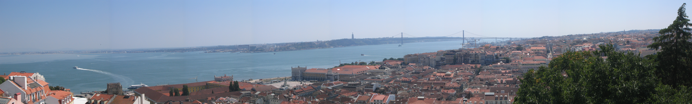

BEM-VINDO A PORTUGAL 🇵🇹
Se siente.
Se vive.
É Portugal.
El rojo de la pasión. El verde de sus paisajes. El azul de sus azulejos. Viaja entre goles, sabores, revoluciones y pequeñas historias que hacen grande a Portugal.
120 historias 6 temas · Un país por descubrir

Olá!BIENVENIDO A PORTUGAL
El Atlántico de fondo.
Mil historias por delante.
Mil historias por delante.
SAUDADE⚽ FUTEBOLAZULEJOSPASTÉIS DE NATA♫ FADOATLÂNTICO
120 CURIOSIDADES · UNA SORPRESA CADA VEZ
Psst… Portugal tiene
algo que contarte.
Toca el botón y descubre una historia que no te esperabas.
Historia, fútbol, sabores y mucho más. ¿Qué te tocará?
DESAFÍO PORTUGAL · JUEGO INTERACTIVO
¿Turista curioso
o alma portuguesa?
10 preguntas por partida. Elige una respuesta, descubre su historia y suma puntos. Cada viaje trae una combinación distinta.
10 preguntasSin cronómetro100 puntos posibles
SIEMPRE HAY ALGO POR DESCUBRIR
Un país se conoce también
por sus pequeñas historias.
120 historias sobre fútbol, historia, política, cultura, gastronomía y sorpresas. Descubre una historia con cada clic y vuelve al quiz para poner a prueba lo que aprendiste.